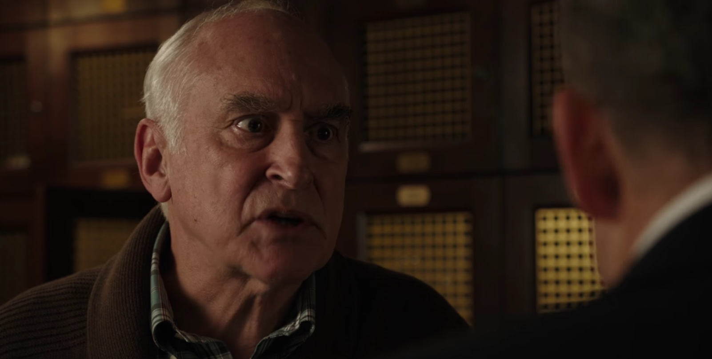

01
弗利电话 → 雪茄店
帮助未被回报，造王者换了候选人

剧情事实弗利向老查克确认，自己应其请求挫败了阿克斯的赌场投资；他也知道查克对此不知情。孙女的法官助理职位没有落实，弗利转而支持鲍勃·斯威尼。老查克向儿子传达竞选支持变化，查克宣称民主时代已不需要造王者，认为自己能凭力量让弗利正眼相看。[1][2]
这一场为什么重要 · 个人解读
开场把此前的幕后联系说得更明确，但这份信息只在弗利与父亲之间共享，查克听到的仍主要是政治支持受挫。弗利用另一位候选人表达不满，也制造了一个可观察查克怎样应对的局面；此时还无法确定，他从一开始就只把斯威尼当作测试工具。
因此 → 查克决定先处理斯威尼，而阿克斯仍在寻找能直接接近弗利的办法。